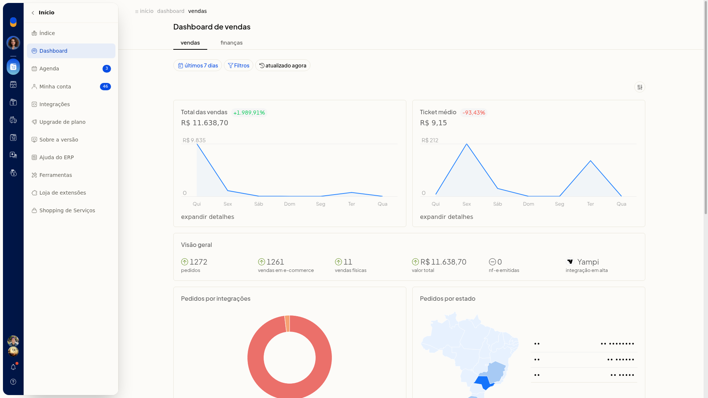
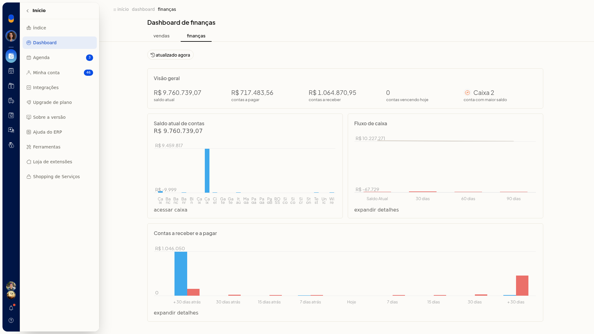

Dashboard
No Dashboard do ERP da Olist, você acompanha indicadores de vendas e de finanças do período em exibição. Você consulta esses números sem gerar um relatório.
Importante
- Para ver os números no Dashboard, a conta precisa ter movimentação.
Instruções
- Acesse Início > Dashboard.
- Confira, na aba Vendas, o período em exibição e os indicadores:
-
total de vendas, com variação
-
ticket médio, com variação
-
quantidade de pedidos por origem: e-commerce, vendas físicas e NF-e
-
integração em alta
-
pedidos por integração e por estado
-
funil de CRM
-
produtos
-
horários
-
vendas versus devoluções

-
Abra a aba Finanças e confira saldo, contas a pagar e a receber, vencimentos do dia, maior saldo e fluxo de caixa. Use os atalhos para acessar o caixa e expandir os detalhes.

Resultado
O Dashboard exibe os indicadores e gráficos da aba escolhida, Vendas ou Finanças.